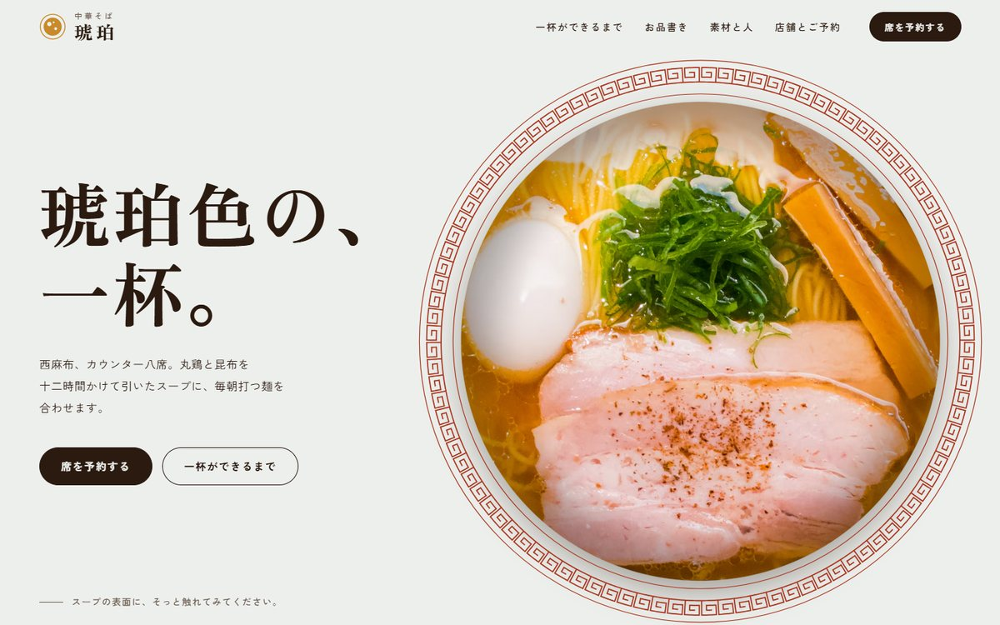
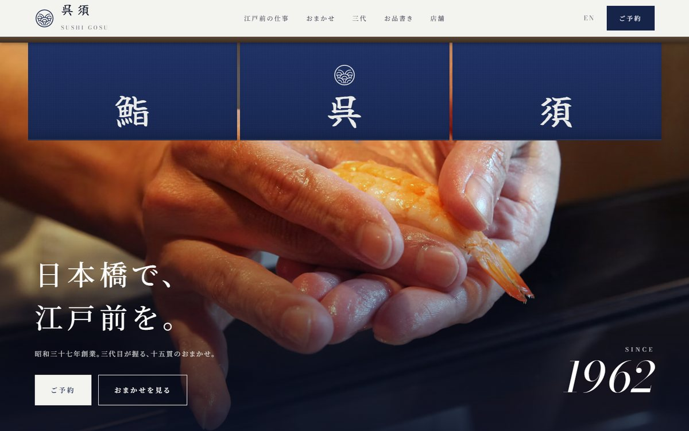
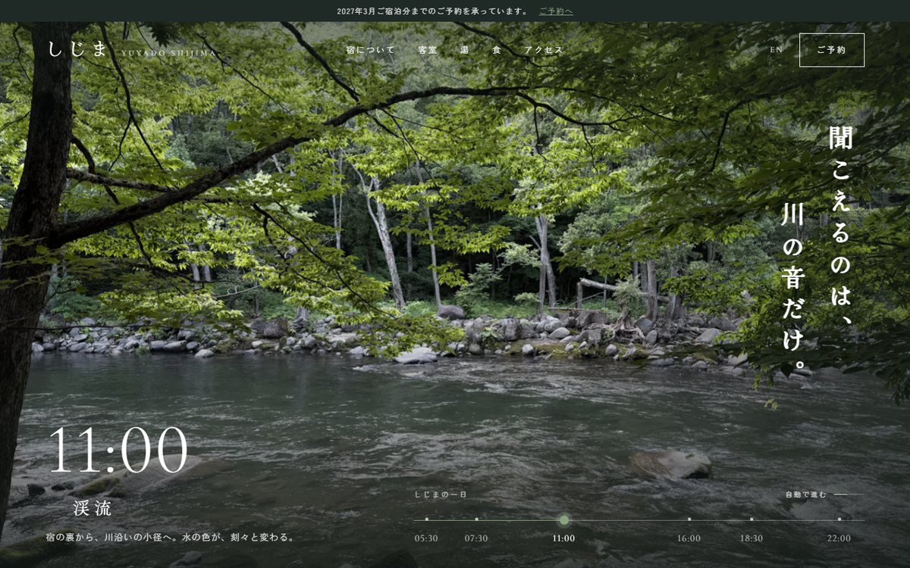
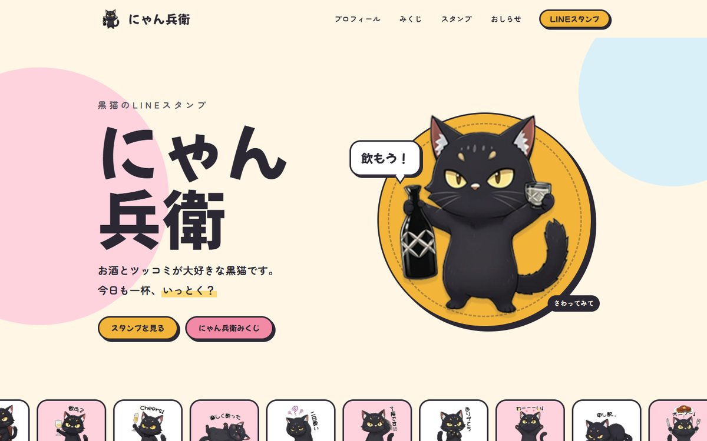
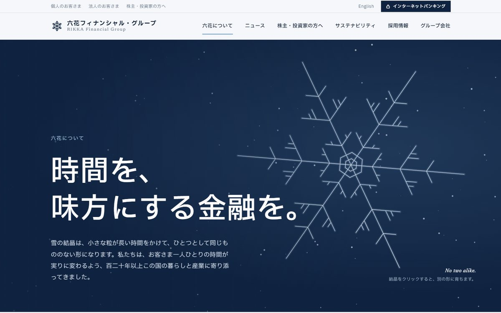
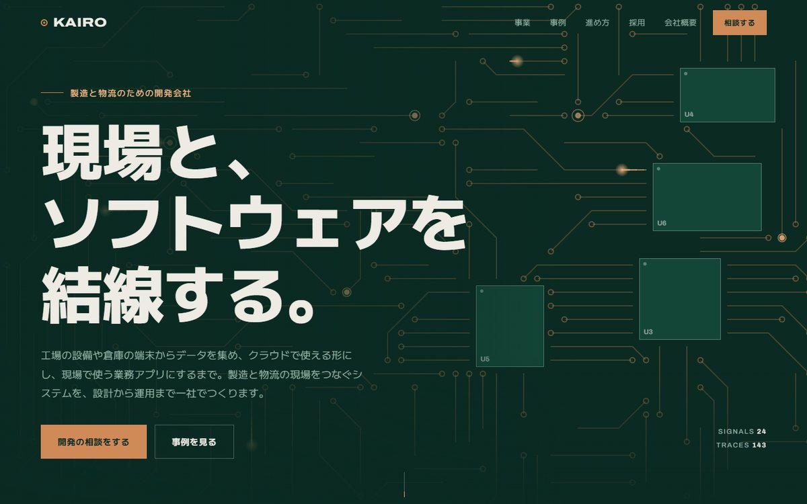
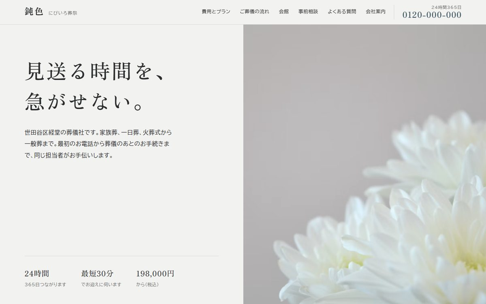
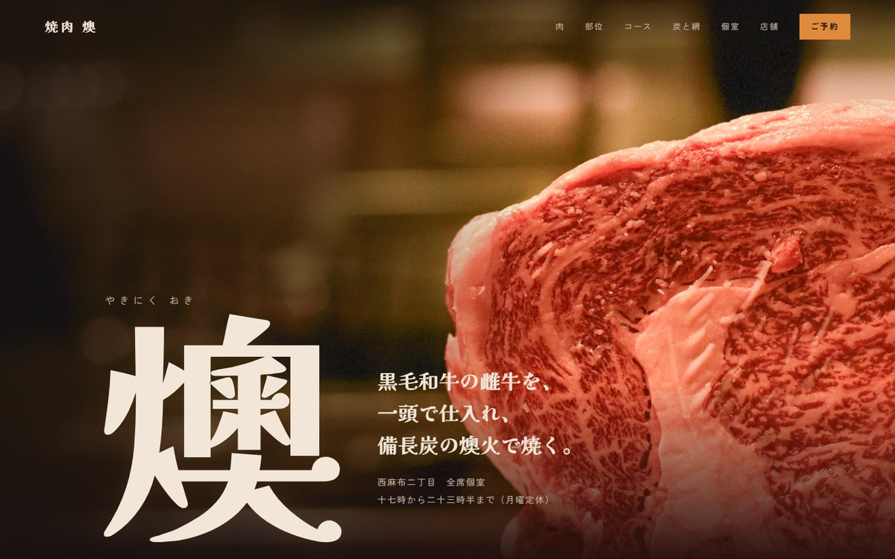
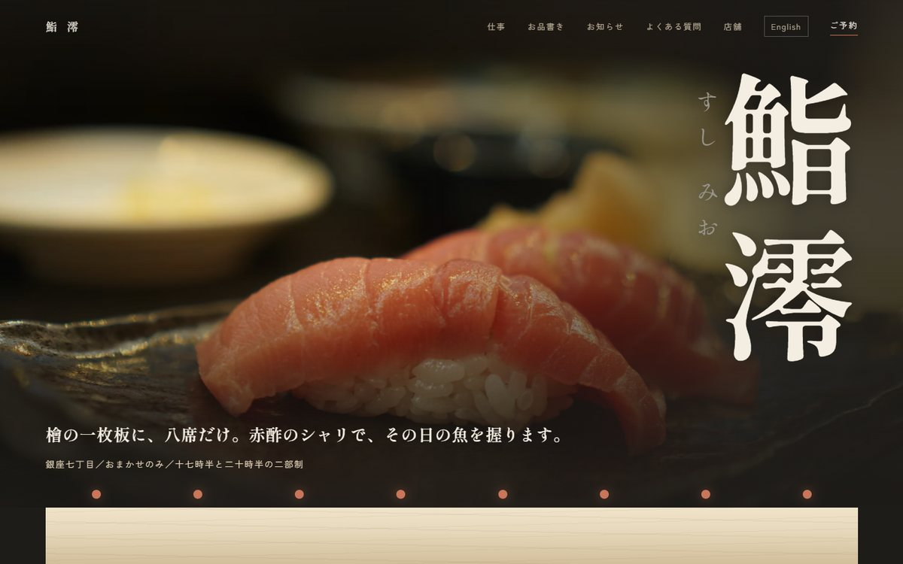

-

09飲食店
中華そば 琥珀
西麻布の醤油そば
西麻布、カウンター八席。丸鶏と昆布を十二時間かけて引いたスープと、毎朝打つ自家製麺の醤油そば。
5ページ
ramen-kohaku/ -

08飲食店
鮨 呉須
日本橋の江戸前鮨
昭和三十七年、日本橋で創業。三代目が握る、江戸前の仕事を尽くした十五貫のおまかせ。鮨 呉須（ごす）。
7ページ
sushi-gosu/ -

07宿泊
湯宿 しじま
木曽の渓谷の旅館
長野・木曽の渓谷に佇む、全八室の湯宿。聞こえるのは、川の音だけ。源泉かけ流しの湯と、木曽の山と川の恵みの会席を。
1ページ
shijima/ -

06キャラクター
にゃん兵衛
LINEスタンプのキャラクターサイト
にゃん兵衛は、お酒とツッコミが大好きな黒猫のキャラクターです。LINEスタンプ「にゃん兵衛2」全40種を紹介しています。
1ページ
nyanbei/ -

05企業
六花フィナンシャル・グループ
銀行グループの企業情報ページ
六花フィナンシャル・グループの企業情報。パーパス、数字で見る六花、グループの強み、トップメッセージ、沿革をご紹介します。
1ページ
rikka-fg/ -

04企業
株式会社カイロ
製造・物流のIT・IoT開発会社
株式会社カイロは、製造・物流の現場の設備とクラウドをつなぐ開発会社です。IoT、データ基盤、業務アプリ、クラウド運用まで一社で。
1ページ
kairo-inc/ -

03葬祭
にびいろ葬祭
世田谷の葬儀社
世田谷区経堂の葬儀社。家族葬・一日葬・火葬式・一般葬。24時間365日、お電話ひとつでお迎えに伺います。費用は事前にすべて書面でお伝えします。
1ページ
nibiiro-sosai/ -

02飲食店
焼肉 燠
西麻布の焼肉店
黒毛和牛の雌牛を一頭で仕入れ、紀州備長炭で焼く。西麻布、全席個室の焼肉店。
1ページ
yakiniku-oki/ -

01飲食店
鮨 澪
銀座の鮨店
銀座七丁目、檜の一枚板に八席。赤酢のシャリで握る、おまかせ一本の鮨店。十七時半と二十時半の二部制。
2ページ
sushi-mio/